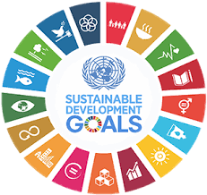

PENGARUH SDGs
Apa pengaruh SDGs?ğŸ’🤔

Pelaksanaan SDGs di Indonesia dilakukan sejalan dengan perencanaan pembangunan nasional. Maka pemerintah mengintegrasikan target-target SDGs pada dokumen perencanaan pembangunan supaya tujuan utama pemerintah tercapai. Pelaksanaan SDGs saat ini telah memasuki Decade of Action, yang menjadi peran penting dan tanggung jawab bagi seluruh masyarakat bukan hanya pemerintah. Prinsip partisipatif ini menjadi kunci kolaborasi nyata di tengah tantangan yang ada di zaman sekarang. Komitmen Pemerintah Indonesia menunjukkan komitmen untuk mengakselerasikan pencapaian SDGs seperti yang tercermin pada Peraturan Presiden Nomor 111 Tahun 2022.
Apa pengaruh SDGs?ğŸ’🤔
Dalam SDGs terdapat 17 jumlah SDGs yang merupakan seruan untuk bertindak bagi seluruh negara. Dari terbitnya Peraturan Presiden No. 59 Tahun 2017, Indonesia telah merencanakan sejumlah strategi untuk mencapai SDGs di antaranya produktivitas sektor ekonomi, perekonomian hijau, transformasi digital, relokasi atau pemindahan ibu kota. Pemulihan ekonomi Indonesia juga akan didorong oleh pembangunan rendah karbon dengan peningkatan atau perbaikan nilai tambah ekonomi, keamanan pangan, dan peningkatan distribusi infrastruktur untuk memajukan negara.